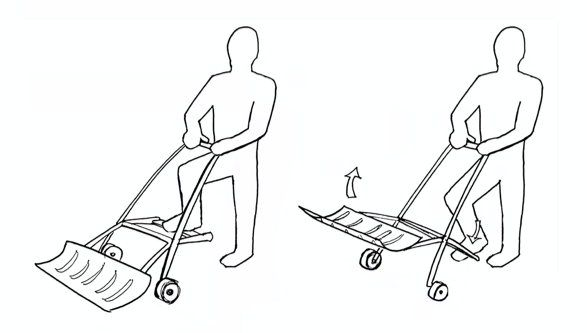
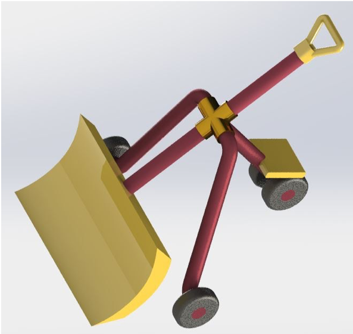
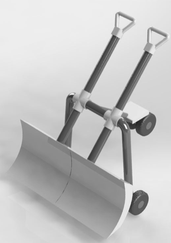
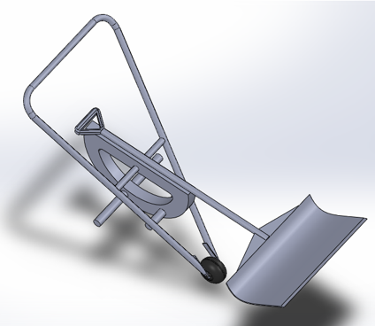
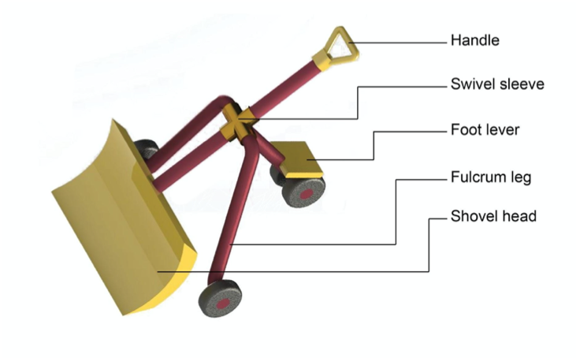
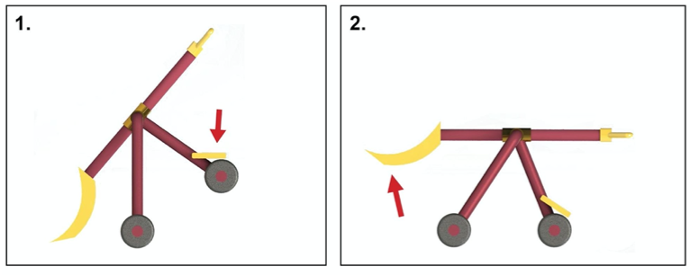
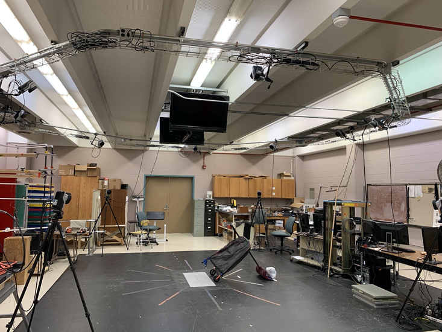

Snow Stomper
Team: Dave Carr, Hridyesh Mangalath, Philippe Meister, Michael Olk, Shekoofe Saadat
Executive Summary
Snow removal results in 12,000 annual accidents in the United States. Of the 12,000 accidents, 34.3% include strain on the lower back tissue due to overextension (Watson et. al. 2011). There are back-friendly snow-removal tools on the market, but none reduce strain on the back by empolying leg muscles. The Snow Stomper employs the leg muscles to lift snow. The Snow Stomper was tested with 5 participants and it decreased muscle activity in the lower back and increased muscle activity in the leg; however, the moment across the L5S1 joint are larger than for a standard shovel. Future work can focus on reducing the moment arm of the Snow Stomper while retaining functionality.
Domain
Low back strain is one of the leading causes of injury in industry. In the united states, it is estimated that 85% of the workforce will experience lower back pain in their lifetime resulting in estimated 12 restricted work days per incidence. If the symptoms continue for six months, less than half of the workers will ever return to the same job (Andersson GBJ, 1999). Previous research into lower back strains recommend squat lifting compared to stoop lifting in order to engage quadricep muscles instead of lower back muscles (Anderson, at, al. 1986; Barzegari, et, al. 2007).
Snow removal is an activity that results in many low back strains. About 12,000 incidents related to snow shoveling are reported to the emergency rooms in the United States per year, with over 34.3% injuries including a strain of the back soft tissues due to over extension (Watson et. al., 2011). There are a few manually powered snow removal tools that provide alternative lifting and pushing techniques; however, there are no tools that remove the strain on the back by employing leg muscles to lift the snow.
Requirements
We interviewed 10 people who are responsible for snow removal at their private residence to generate requirements for a snow removal tool that is usable and addresses the problem of back strain. We also included self-imposed requirements to make the tool quiet and sustainable - so no gas engines. Requirements for this tool include the following: (1) must decrease strain on back (2) be usable for 45 minutes with minimal breaks (3) cost less than $100 (4) be human-powered.
Preliminary Concept
The Snow Stomper can use the strong lower-body muscles to lift snow. Using the power of the leg muscles can help mitigae common lower-back strain.

Develpment of Concept
We developed our concept with the analytical methods of task analysis, the combination table, and Harris Profile.
Task Analysis
The task analysis resulted in four generic stages of snow removal with a shovel. The four stages identified were the following:
- Push and/or scoop
- Lift
- Dump or throw
- Repeat
Combinations
We isolated each stage and generating concepts that would satisfy the goal of that stage. Our concepts maintained the aim of eventually developing a manual snow removal concept that utilizes the power of the lower body. Our method of generating concepts for each stage was brainwriting. Brainwriting entails a group of 4-5 individuals each starting with a blank piece of paper and silently generating one concept through illustration or writing for the agreed criteria. Ideas are put in the center of the table called the “pool” and other participants can pull out ideas from the pool and build off of them. This facilitates the process of building off of other people’s ideas to create new solutions. We held three sessions; one for each stage of the manual snow removal process. After the primary ideation phase, we configured all the fundamental concepts into a combination table. The goal of the combination table was to generate concepts for each stage that would act as fragments to then systematically piece together to create a plausible solution for our problem statement (Eppinger 134).
| a (push/scoop) | b (lift) | c (dump/throw) | |
|---|---|---|---|
| 1 | Bin | Air bladder | Wheelbarrow |
| 2 | Wheelbarrow | Crank | Sand box (2 levers) |
| 3 | Conveyor belt | Double hand lever | Foot pedals |
| 4 | Straight bar | Single leg lever | Flexible |
| 5 | Push on wheels | Leg lever | Swivel 2 part |
| 6 | Skid | Conveyor lever | Swivel 1 part |
| 7 | Whale | Crank ratchet | Brake cable release |
| 8 | Activator | ||
| 9 | Clamshell |
With the fragments listed out underneath their respective stage, we took time to silently create formulas that would represent a potential, complete concept. It was understood between all group members to eliminate any combinations that do not make sense. The formulas of the concepts were written on the white board and initialed and discussed. This resulted in a list of possible combinations generated by individual team members.
Downselection
A process of down-selection was conducted to eliminate solutions that were not as viable as solutions. After this process, we came to three possible solutions. The resulting three designs were the most promising designs that resulted from the concept generation sessions and combination table. To further evaluate the three solutions, we translated them into CAD in order to visualize the solutions in more accurate detail.
The Single Swivel Shovel had three wheels and an attached shovel. The design includes a lever for the lower-body-powered lifting. The dumping on this design is done by twisting the shovel, resulting in the snow sliding off from either side of the shovel head.

The Dual Swivel Shovel had three wheels and two attached shovels. This design also includes a foot lever to allow for lower-body-powered lifting. Dumping on this design is done by twisting the shovels, resulting in the snow sliding off towards the inside or outside of the shovel.

The step Shovel has one wheel and one attached shovel. The design has a lower-body powered step that lifts the shovel and snow. The dumping on this design is done by twisting the entire mechanism like a wheelbarrow.

Harris Profile
A Harris Profile was used to evaluate the three designs. The goal with this method was to facilitate the decision-making process by rating the three concepts on their strengths and weaknesses with respect to the established criteria of the design goal (A.G.C 139). For each concept, a four point scale is made represented by the following ratings: -2 = bad, -1 = moderately bad, +1 = moderately good, and +2 = good. The criteria were listed from top to bottom based on how important they are to be satisfied; with the first one being most important and the last one being the least important. We chose “Cost / easy to manufacture” to be the most important criteria because of the limited time we had to prototype and test the product properly to yield our most honest results. The criteria relating to strains in the body were ranked second, third, and fourth in order to pay attention to which solution aligned with the problem statement. The design that had the most desirable traits was the single swivel shovel. The single swivel shovel was expected to be easy to fabricate for prototyping, and effective and reducing the strain on the back, arm, and shoulder.
Design
The best concept from the Harris profile (single swivel shovel) was prototyped and tuned to meet a high enough fidelity in order to test its function in the lab. We named the design the Snow Stomper to signify that it is a removal tool that uses foot-action to lift the snow. The design includes the desirable features from the single swivel shovel, which include foot-powered lifting and a wheeled support structure.


Testing
Participants
Five participants (1 female, 4 male) were gathered using a convenience sample of participants who live in the Midwest region of the United States. All participants had previously been involved in residential snow removal or were currently responsible for residential snow removal. No participants had been involved in commercial snow removal. Participants’ dominant hand was the right hand. Participants had ages 22-32 years (mean 25.8), weighed 65-84kg (mean 76kg), height 1.72-1.82 meters (mean 1.75m).
Materials
The study was conducted in a kinesiology lab that is equipped with Electromyography sensors (Delsys Inc., Boston, MA, USA), reflective sensors, and 12 Qualysis cameras (Qualysis Motion capture Systems AB, Gothenburg, Sweden).The Electromyography sensors are used to sense muscle energy. The reflective sensors are sensed by the infrared motion capture cameras track movement at a sampling frequency of 240 Hz. The sensible area was 20 feet wide

The snow-removal tools used for the activities were a conventional shovel and the Snow Stomper. The conventional shovel had a wood handle and metal blade. This shovel was chosen because it represents a common tool that would be found in households. This shovel does not represent the most evidence-based function shovel available on the market. We covered the metal blade with tape and paper so that the shiny metal would not interfere with the sensors (see Figure 19). The Snow Stomper was also covered with a garbage bag and tape so that shiny metal would not interfere with the sensors. The weights used were corn bags of half and one pound weight increments placed in the scoop zone of each device.
Procedure
The participant was presented with the foreseeable risks and gave written consent. Participants were informed on the schedule of their participation, which included the collection of demographic information, the placement of electromyography (EMG) sensors, the activity with a shovel, and the activity with the new design. Participants were asked their demographic information including, age, sex, height, weight, and dominant hand/arm. Participants had EMG sensors placed on the dominant anterior deltoid, dominant biceps, right Erector Spinae, and Left Erector Spinae. Then the participants maximal voluntary isometric contraction (MVIC) was tested. Finally, retroreflective markers were placed on participants’ right and left acromion processes (shoulders), lateral epicondyles (elbows), radial tuberosities (wrists), L5 vertebrae and C7 (Cervicale). Additionally, one marker was placed on the tool. The marker position data was recorded using 12 Qualysis cameras (Qualysis Motion capture Systems AB, Gothenburg, Sweden), at a sampling frequency of 240 Hz.
Participants were informed on the activity of the first trial and the following questionnaire. The trials were counterbalanced so some participants did the shovel first and others did the Snow Stomper first. In the first trial, participants were instructed to use a tool to lift, hold for 5 seconds, and drop a weight (5% of their body weight). They practiced the procedure and researchers affirmed that the participants conducted appropriate procedures. After the practice, the participants conducted the shovel procedure with three repetitions. After the three repetitions the participant was asked the post-condition questionnaire (See Appendix 2).
Participants were informed on the activity of the second trial and the following questionnaire, which is the same as the first trial. In the second trial, participants were instructed to use the other tool to lift, hold for 5 seconds, and drop a weight (5% of their body weight). They were instructed to practice the procedure and researchers affirmed that the participants conducted appropriate procedures. After the practice, the participants conducted the new design procedure with three repetitions. After the three repetitions the participant was asked the post-condition questionnaire (See Appendix 2).
Kinematic data were low pass filtered with a cut off frequency of 15 Hz. EMG data was rectified and band pass filtered using cut off frequencies of 20 and 450 Hz., using a zero lag 4th order butterworth filter. Matlab 2019b package was used for data processing (Matlab, Mathworks). The EMG data were normalized to the MVIC values.
Hyphotheses
The two hypotheses address the biomechanical and subjective measures of participants use of the shovel and Snow Stomper
H1: Users of the Snow Stomper will experince lower measures of force, joing moment, and muscle activity when cmpared to baseline.
H2: Users of the Snow Stomper will experince higher levels of comfort and performance when compared to the baseline
Results
Biomechanical Evaluation
The data was analyzed with a paired t-test was used with a significance level of 5%. The muscle activity in the lower back decreased with the use of the snow stomper and the muscle activity in the leg increased with the use of the snow stomper. The results were not significant, but they were in the desired direction. We could test with more partiicpants and likely find significant results.
The joint moment for the L5S1 joint (back) increased with the use of the snow stomper but the increase was not significant. This is not the result we want to see, so we must redesign to decrease joint moment.
Participant Surveys
Participant surveys resulted in generally favorable reviews of the snow stomper. All 5 Particpants reported that it felt more comfotable to use than the standard shovel in the shoulders, arms, and back. Participants did not report any preference toward the snow stomper in ratings of performance. This is likely because they are accustomed to the shovel, and our prototype is not yet production quality.
Limitations
The evaluation used laboratory procedures to identify specific muscles and analyze how they are engaged during the process of snow removal. The evaluation had limitations that influence its generalizability to the activity of shoveling. First, we were only able to secure participants between the ages of 22 and 32. These participants were used because they were accessible in a short time frame and located within a 30-minute travel distance of the laboratory. Second, the experimental procedure used a bagged corn-kernel weight instead of naturally occurring snow or a loose material that mimics naturally occurring snow. Third, our experiment was run with three repetitions which is fewer than the number of repetitions in a typical snow removal session.
Recommendations
Further work could investigate a broader scope of testing with varying independent variables such as load weights representing several snow densities. We would use a higher number repetitions and higher weights to identify the difference.
References
- A.G.C. van Boeijen, J.J. Daalhuizen, J.J.M. Zijlstra and R.S.A. van der Schoor (eds.) (2013) Delft Design Guide. Amsterdam: BIS Publishers. 138-139.
- Anderson, C. K., & Chaffin, D. B. (1986). A biomechanical evaluation of five lifting techniques. Applied Ergonomics, 17(1), 2–8. https://doi.org/10.1016/0003-6870(86)90186-9
- Andersson GBJ. (1999). Epidemiological features of chronic low-back pain. Lancet, (354), 581–585.
- Aqua-calc.com. Density of Corn, shelled (material). Accessed: https://www.aqua-calc.com/page/density-table/substance/corn-coma-and-blank-shelled
- Bazrgari, B., Shirazi-Adl, A., & Arjmand, N. (2007). Analysis of squat and stoop dynamic liftings: muscle forces and internal spinal loads. European Spine Journal, 16(5), 687–699. https://doi.org/10.1007/s00586-006-0240-7
- Degani, A., Asfour, S. S., Waly, S. M. and Koshy, J. G. 1993. A Comparative Study of Two Shovel Designs. Applied Ergonomics, 24(5): 306–312.
- Eppinger, U. (2012). Product Design and Development. Irwin McGraw-Hill. 134-136
- Marras, W. S. (2000). Occupational low back disorder causation and control. Ergonomics, 43(7), 880–902. https://doi.org/10.1080/001401300409080
- OSHA 1910.25 - Walking-Working Surfaces -Stairways https://www.osha.gov/laws-regs/regulations/standardnumber/1910/1910.25
- Punnett, L., Prüss-Üstün, A., Nelson, D. I., Fingerhuf, M. A., Leigh, J., Tak, S. W., & Phillips, S. (2005). Estimating the global burden of low back pain attributable to combined occupational exposures. American Journal of Industrial Medicine, 48(6), 459–469. https://doi.org/10.1002/ajim.20232
- Sifre, P. (2015). Evaluating Snow Loads on Structures. Simpson Gumpertz & Heger. Accessed: http://www.sgh.com/sites/default/files/downloads/topic_brief_evaluating_snow_loads.pdf
- Stuart M. McGill , Leigh Marshall & Jordan Andersen (2013) Low back loads while walking and carrying: comparing the load carried in one hand or in both hands, Ergonomics, 56:2, 293-302, DOI: 10.1080/00140139.2012.752528
- Watson, D.S., Shields, B.J., Smith, G.A., (2011). Snow shovel-related injuries and medical emergencies in US EDs, 1990 to 2006. Am. J. Emerg. Med. 29 (1),11-17